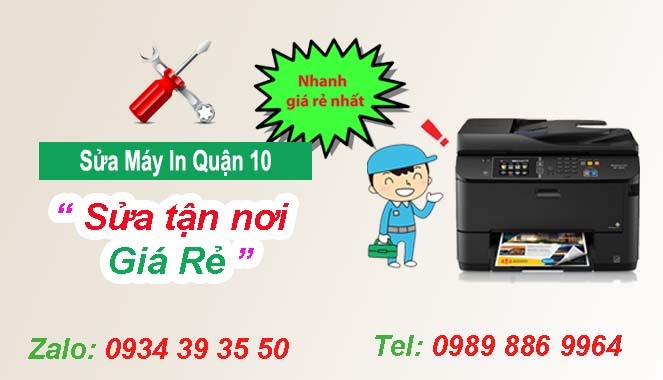

Sửa máy in quận 10
Công ty Tin học hi-tech là đơn vị chuyên sửa máy in tại quận 10 gia rẻ nhất, có mặt siêu tốc chỉ 20 phút, khắc phục sự cố kịp thời, Linh kiện thay thế chính hãng giá cực cạnh tranh, sửa tất cả các dòng máy in hp - canon - samsung - brother - ricoh ... địa chỉ tại 77 Cửu Long, Phường 15, quận 10, tel: 089 886 9964 - Zalo: 0934 393550

Khi quý khách hàng đang in tài liệu bổng nhiên máy in không hoạt động, máy in bị lem mực, máy in bị kẹt giấy, hay đơn giản cần công ty sửa máy in tận nơi quận 10 uy tín - chuyên nghiệp
Khi máy in bị hỏng hóc, gặp sự cố hãy liên hệ Tin Học Hi - Tech để được hỗ trợ tư vấn miễn phí về vấn đề máy in - mực in
Sửa máy in tại quận 10 : Uy tín - chất lượng
Tại quận 10 có nhiều công ty, cửa hàng sửa máy in và Hi-Tech là đơn vị chuyên sửa chữa máy in tận nơi quận 10 uy tín - giá rẻ, có mặt nhanh nhất chỉ 20 phút
Hoạt động trên 7 năm kinh nghiệm, với đội ngũ nhân viên năng động, trình độ kỹ thuật cao, luôn tâm huyết, tận tâm với khách hàng, Trung tâm sửa máy in mang đến cho Quý khách dịch vụ hoàn hảo, chất lượng cao nhất.
Tại quận 10 công ty tin học Hi-Tech với phương châm nhanh - giá rẻ nhất, luôn mong muốn mang lại dịch vụ chất lượng nhất, làm hài lòng khách hàng - với đội ngũ kỹ thuật viên lành nghề, tử tế trong lĩnh vực sửa máy in tại nhà khách hàng.
Tin Học Hi-Tech luôn hạng chế tối đa vấn đề bị hư lại và phải bảo hành - anh hưởng đến công việc của quý khách hàng. vì vậy trong việc sửa máy in tận nơi quận 10. Luôn thay thế linh kiện chính hãng, tốt nhất để máy in được vận hành trơn chu.
Công ty sửa máy in tận nơi giá rẻ quận 10 của Hi-Tech có bảo hành uy tín với khách hàng, Sửa máy in tại nhà có xuất hóa đơn vat đầy đủ khi công ty, doanh nghiệp có nhu cầu. Ngoài ra tại quận bình thạnh Hi-Tech còn nhận làm công nợ cuối tháng với doanh nghiệp, công ty khách
Trong trường hợp máy in của quý khách hàng bị hư hỏng nặng liên quan đến vấn đề điện tử ... Hi-Tech có máy in thay thế tại thời để phục vụ nhu cầu in ấn của quý khách hàng trong thời gian sửa chữa
Công ty Tin Học Hi-tech có đội ngũ kỹ thuật viên năng động, nhiệt tình - Nhận sửa chữa máy in tận nơi, nạp mực máy in quận 10 tất cả các ngày trong tuần, kể cả thứ 7, chủ nhật. Khi quý khách hàng cần sửa máy in buổi tối ở tại quận bình thạnh, có thể liên hệ với Hi-Tech trước 5h, Kỹ thuật viên sẻ túc trực tại nơi khách hàng
Với vị trí nằm tại trung tâm quận 10, đội ngũ đông đảo, tay nghề cao vì vậy Hi-tech luôn tự hàng là đơn vị sửa máy in giá rẻ quận 10 nhanh nhất, tại nhà khách hàng với giá cực cạnh tranh
Tại sao chọn sửa máy in tại nhà quận 10 của Hi-tech ?
Với kinh nghiệm trên 10 năm trong lĩnh vực sửa máy in, mực in tại quận 10, Hi-Tech luôn tự hào là một trong những đơn vị đi đầu trong lĩnh vực tin học tại tphcm. Kỹ thuật viên nhiều năm kinh nghiệm, khắc phục sự cố máy in kịp thời, chính xác.
Công ty tin học Hi-tech được đặt tại 77 Cửu Long, phường 15, Quận 10. Vì vậy kỹ thuật vin của chúng tôi luôn có mặt nhanh nhất sau khi nhận được yêu cầu cần sửa máy in của quý khách hàng.
Hi-Tech nhận sửa chữa, khắc phục sự cố một cách nhanh nhất. Sửa máy in tại nhà quận 10, khắc phục sự cố máy in tận nơi khách hàng làm việc, quý khách hàng không cần phải mang máy đi sửa chữa
Sửa máy in tại công ty có xuất hóa đơn vat đầy đủ, hỗ trợ công nợ cuối tháng với các công ty doanh nghiệp có nhu cầu.
Chất lượng sửa máy in quận 10 của Nam phong có tốt không ?
Công ty tin học Hi-Tech ở quận 10 sửa chữa máy in tận nơi nhanh nhất. có mặt siêu tốc chỉ 20. Khắc phục sự cố nhanh chống. linh kiện mực in - máy in của Hi-Tech được nhập từ malaysia, japan, chất lượng tốt.
sửa máy in có bảo hành uy tín ở tại quận 10, linh kiện thay thế được bảo hành theo tiêu chuẩn của nhà sản xuất
Với các lõi máy in thông thường, kỹ thuật viên của chúng tôi sẻ tiến hành kiễm tra và sửa chữa tại nhà khách hàng, làm tận nơi tại công ty, doanh nghiệp của quý khách hàng.
Trong trường hợp máy in bị hư hỏng nặng - liên quan đến vấn đề vi mạch, điện tử ... cửa hàng sửa máy in tại quận 10 của chúng tôi sẻ có máy in thay thế để quý khách hàng sử dụng trong thời gian sửa chữa máy in bị hỏng.
Giá sửa máy in tại quận 10 là bao nhiêu ?
Một số lỗi máy in thường gặp
- Sửa lỗi máy in không lấy giấy được, máy in bị kẹt giấy, kéo nhiều tờ giấy
- Sửa lỗi máy in không in được, in ra nhiều ký tự lạ, báo lỗi đèn vàng, đèn đỏ ...
- Mua hộp mực mới nhưng vẫn không khắc phục được tình trạng trang in bị lem, bị sọc
- Máy cuốn giấy bị nhăn, rách giấy, máy in hp hay kẹt giấy
- Sửa máy in chỉ in được 1 trang rồi in
- Sửa lỗi máy in bị mất nét, mực in ra không đều
- sửa lỗi máy in Không in được, rớt mực, lem đen, sọc đen, sọc trắng, mất chữ, không cuốn giấy, cuốn giấy nhiều tờ, kẹt giấy, kêu lớn, không có driver,
- Giấy in ra bị nhăn, bị rách giấy, bị kẹt giấy
- máy in không lấy giấy lên được
- Máy in kêu to, có mùi lạ, lúc in được lúc không
- Máy in bị sai màu, bị lệch màu ,thiếu màu, máy in bị sọc
- Xử lý phần cứng máy in: Bo mạch, gạt, drum
- Sửa lỗi máy cuốn giấy nhiều tờ
- Nhận sửa sửa lỗi máy in kẹt giấy, máy không hoạt động
- Sửa lỗi máy in bảng in bị lem hoặc mất chữ , mất hàng
- Khắc phục sự cố máy in không vô điện
Lợi ích sửa máy in tại quận 10 của Hi-Tech
Một số câu hỏi khách hàng quang tâm
Dịch vụ sửa máy in tại nhà quận 10 giá rẻ các lỗi như:
- Sửa lỗi máy in không nhận lệnh in
- Sửa lỗi máy in hay bị kẹt giấy
- Sửa lỗi máy in kéo nhiều tờ giấy trắng
- Sửa máy in không lên nguồn
- Sửa máy in bị lem, bị đổ mực
- Sửa chữa máy in bị mờ, chữ không đều ...
- Sửa máy in tận nơi quận 10 lỗi mực không đều
- Bảng in bị nhòe, màu ra không đều ...
- Sửa chữa lỗi máy in không kéo giấy
- Sửa bản in có đường xọc
- Máy in kêu to, bị treo ...
- ........................
Công ty Hi- Tech tại quận 10 nhận sửa chữa tất cả các dòng máy in laser trắng đen, laser màu, máy in phung màu của tất cả các hãng như: HP - Canon - Samsung - Brother - Ricoh - Panasonic ...
QUY TRÌNH SỬA MÁY IN TẠI NHÀ Ở QUẬN 10
Bước 1. Kiểm tra kiểm tra toàn bộ máy in, từ những linh kiện máy in nhỏ nhất để chắc chắn lỗi máy in cần sửa nguyên nhân là do hỏng trục từ, gạt, hay trống, ... nhằm tránh trường hợp thay nhầm, gây lãng phí tiền bạc cho người sử dụng.
Bước 2. Khi xác định được chính xác lỗi, Shop máy in cũ hà nội sẽ đưa ra cách khắc phục sửa chữa máy in và báo giá hợp lý nhất cho khách hàng. (Giá được niêm yết tại công ty đối với từng lỗi – CHỈ TỪ 50K ).
Bước 3. Sửa máy in Bk66 chỉ tiến hành triển khai sửa chữa máy in khi được sự cho phép của khách hàng (Khách hàng đồng ý với giá và phương án khắc phục).
Bước 4. Khi đã thay thế và sửa chữa xong, kỹ thuật viên sẽ vệ sinh toàn bộ máy cho khách, giúp bảo trì, nâng cao tuổi thọ của máy in.
Bước 5. Test lại cho khách hàng xem là lỗi máy in đã được khắc phục.
Bước 6. Trong trường hợp hãn hữu, lỗi máy in đó tiếp tục xảy ra khi kỹ thuật viên trở về, thì khách hàng vui lòng báo lại cho chúng tôi, sửa máy in tại nhà Bk66 sẽ cho kỹ thuật hỗ trợ hoàn toàn miễn phí. Do đó khách hàng hoàn toàn yên tâm khi sử dụng dịch vụ sửa chữa máy in của chúng tôi.
CAM KẾT DỊCH VỤ SỬA MÁY IN TẠI NHÀ QUẬN 10
- Thời gian sửa chữa máy in tối đa là trong vòng 24 tiếng đối với trường hợp mang máy về công ty.
- Để đảm bảo cho công việc của bạn được diễn ra bình thường sửa máy in 115 sẽ cho bạn mượn máy in có tính năng tương đương.
- Nếu sau khi sửa chữa máy in vẫn bị lỗi cũ, Mực in Hi-Tech sẽ hỗ trợ sửa chữa hoàn toàn miễn phí cho khách hàng.
- Nếu khách hàng sử dụng dịch vụ của chúng tôi thường xuyên, sẽ được ưu tiên giá tốt nhất.
- Khách hàng còn được hỗ trợ tư vấn kỹ thuật 24/7 hoàn toàn miễn phí.
>>> Hi-Tech nhận sửa máy in tại nhà tại tất cả các quận huyện Tphcm
– Các dòng máy in laser của các hãng như: HP, Canon, Brother, SamSung, Xerox, Epson, .. như: